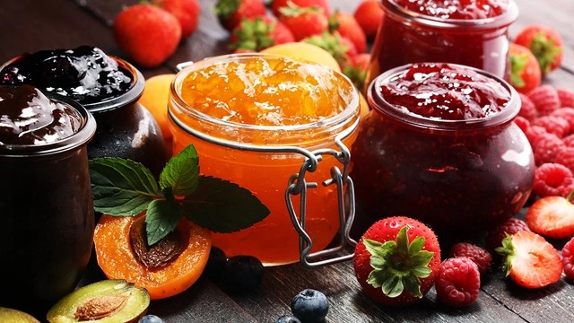
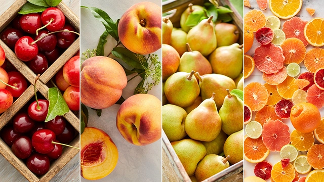

Cut the fruit into even pieces: Depending on the size of your fruit (strawberries, pinapples, blackberries etc), you’ll either need to quarter or halve them before you get started.
Mash the fruit and sugar together: Use a potato masher to work the jam and sugar together — this releases moisture from the berries in particular and gets them cooking faster.
Boil the fruit for 20 minutes: Bring the fruit to a boil over medium heat, stirring occasionally. The mixture will start with big, juicy bubbles and slowly progress to small, tighter bubbles as the jam gets closer to doneness.
Know when the jam is done: Simply dribble some hot jam from the pot onto the frozen spoon and wait a few seconds for it to cool. Run your finger through the jam — if it makes a clear path through the jam and doesn’t fill in, then you have a good set.
Jar and store the jam: When the jam is set to your liking, remove the jam from the heat and transfer to the clean jars. Cover and cool completely before moving the jam to the fridge for long-term storage.

